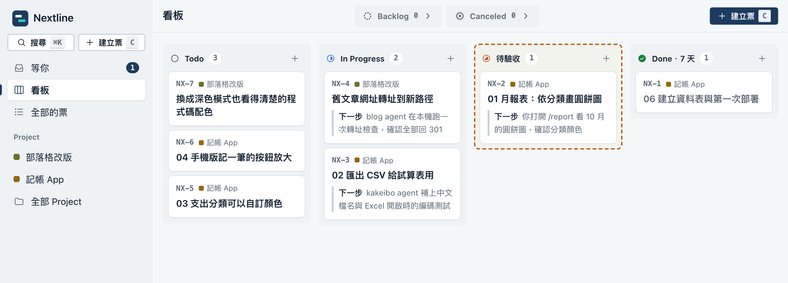
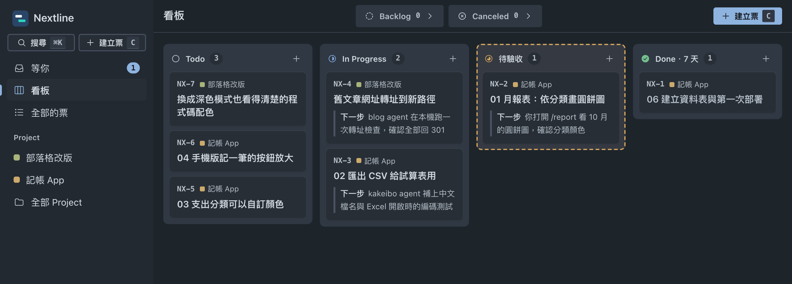
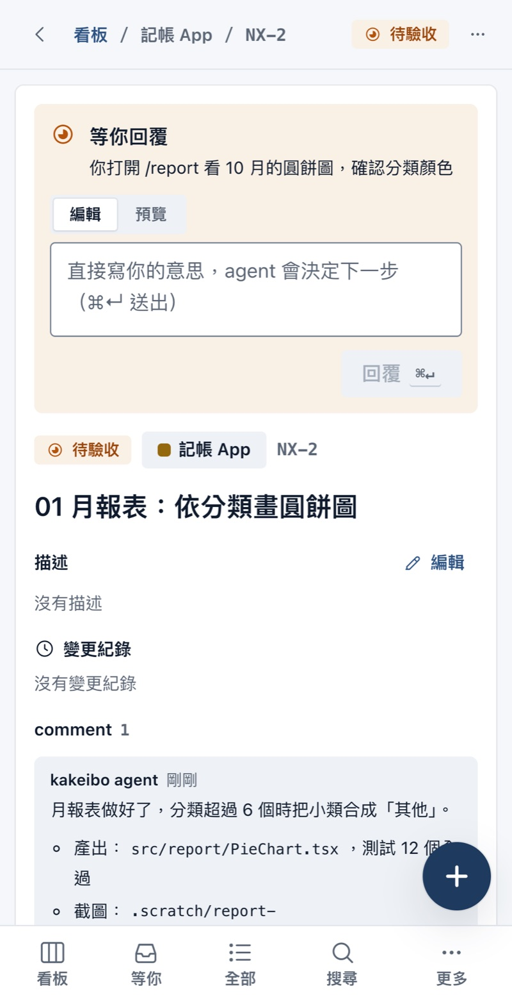
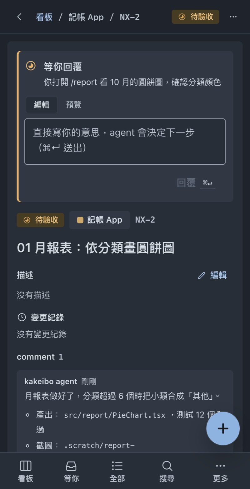

你在網頁上
開票，放進 Todo
寫清楚要做什麼、做到什麼程度算完成。拖拉排序，Cmd+K 隨時找票。
你在網頁開票、驗收；Claude Code、Codex 用 API 或 MCP 讀票、做事、把下一步寫在卡片上。不用再翻對話問「做到哪了」。
↑ 示意動畫。卡片上的標籤是現在輪到誰。
人和 agent 讀寫同一張票。進度不用你轉述，也不會散在好幾個對話裡。
寫清楚要做什麼、做到什麼程度算完成。拖拉排序，Cmd+K 隨時找票。
改成 In Progress，做完把結果寫成 comment、送到待驗收。
你回覆後，票自動交回 In Progress，agent 下次來看就接著做。要結束就移到 Done。
以下是 Nextline 的實際畫面，資料是示範用的。




常用 MCP 工具的名稱和參數照 Linear MCP，用過的 agent 不用重學。差異在這。
每次修改都有紀錄：誰改的、從什麼改成什麼。
拖拉排序、篩選分組、Project、Cmd+K。
票可以設依賴；不要的票封存，不永久刪除。
Node＋SQLite 自架，或你自己的 Cloudflare Workers＋D1。兩種跑法同一份程式。
介面和文件是繁體中文。等你看的票就叫「待驗收」。
Apache License 2.0。程式碼都在 GitHub。
目前是 v0.1 早期版本。需要 Node 22.22 以上或 24.7 以上。初始化時設定登入密碼，打開 http://127.0.0.1:3000 就能用。
git clone https://github.com/BolasLien/nextline.git cd nextline npm ci && npm run build npm run selfhost:init # 設定登入密碼 npm start # http://127.0.0.1:3000 # 另開一個終端機，讓 Claude Code 連上（token 跟登入密碼分開） # export 只在這個終端機有效；把這行的結果寫進 ~/.zshenv， # 從別的終端機或 IDE 開 Claude Code 才讀得到 export NEXTLINE_API_TOKEN="$(npm run --silent selfhost:token)" claude mcp add --transport http --scope user \ nextline http://127.0.0.1:3000/mcp \ --header 'Authorization: Bearer ${NEXTLINE_API_TOKEN}'
不行。只給一個人用，沒有註冊和多人帳號。為什麼只給一個人用
還沒有。所有 agent 共用一組 token；comment 的作者是 agent 自己填的文字，不是登入身分。
不會。agent 什麼時候來看票，由你的排程或對話決定。
沒有，也沒有估點。
還不是。目前是 v0.1 早期版本，還沒有正式 release，API 和資料格式之後可能會變。